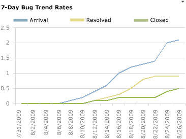

You can use the Bug Trends report in Office Excel to track the rate at which the team is discovering, resolving, and closing Bugs. This report shows a moving average of Bugs that the team has discovered and resolved over time. For information about how to access this report, see Excel Reports (GovDev).
|
|
|---|
|
You can view the Bugs Trends report from the Bugs dashboard. You can access this dashboard only if your team project portal has been enabled and is provisioned to use Microsoft Office SharePoint Server 2007. For more information, see Access a Team Project Portal and Process Guidance. |
|
In this topic |
Related topics |
|---|---|
 Data
in the Report
Data
in the Report
You can use the Bug Trends report to understand the rate at which the team is finding, fixing, and closing Bugs. This report is based on a PivotChart report that shows the last four weeks of data captured for Bugs. That data is stored in the data warehouse.
You should expect the Bug Trends report to vary based on where you are in your product development cycle. Early iterations should exhibit a gradual increase in the rate at which the team discovers bugs.
For information about healthy and unhealthy versions of the report, see Bug Trends Report.
Required Activities for Tracking Bugs
For the Bug Trends report to be useful and accurate, the team must perform the following activities:
-
Define Bugs, and specify their Iteration and Area paths.
 Note
Note
For information about how to define area and iteration paths, see Create and Modify Areas and Iterations.
-
Update the State of each Bug as it is fixed, verified, and closed.
Customizing
the Report
You can customize the Bug Trends report by opening the report in Office Excel and changing the filter options for the PivotTable report. You can customize this report to support other views as the following table describes.
|
View |
Action |
|---|---|
|
Bug trends for an iteration |
Change the filter for Iteration(default=All) |
|
Bug trends for a product area |
Change the filter for Area(default=All) |
|
Bug trends for the last six, eight, or more weeks |
In the Columns PivotTable Field List, replace @@Last 4 weeks@@with a different Set |
For more information about how to work with and customize PivotTable and PivotChart reports, see the following pages on the Microsoft Web site: